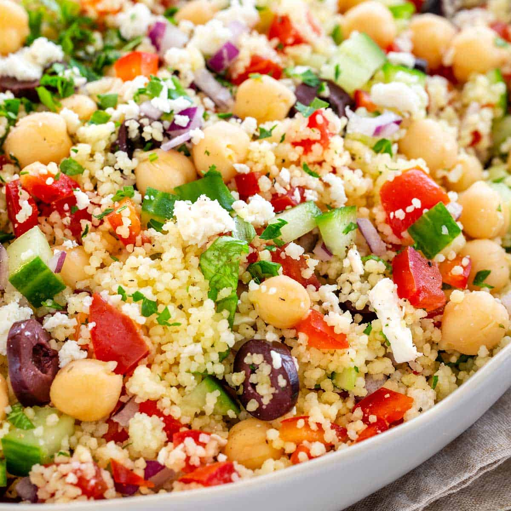

Couscous salad recipe

A nourishing meal that you can whip up when you just don't feel like it
This salad is a personal favorite of mine, when I need something quick, tasty and filling.
You can tweak this dish very easily to your preferences and have it ready to go in minutes.
For my version, I'm gonna put a bit of a Balkan/Greek twist to it, since I am from that part of the world.
Ingredients
- A cup of couscous
- Chicken bouillion or stock
- Butter
- Parsley
- Cherry tomatoes, two handfuls (or regular ones, whatever you got works)
- Feta cheese (200g, sorry imperials)
- Bell pepper (try a green one, so you get some color into it)
- Spring onions or half a regular ass onion, depends if you go a datenight
- Can of chickpeas
- Dark kalamata olives
Ahh I can already hear the moaning:"B-b-but look at all those ingredients Scooby, that's not simple!"
Boiii you best shut your shaggy mouth, you can make this as simple or hard as you want to.
For the above type of people who really like to go bear bones in the kitchen(and probably on the physeek)
I highlighted the items which are your basics; The couse, bouille,butter, tomatoes and bell peppers.
It's gonna be a bit dry but, you can even that out with some balsamic vinegar.
Anyway, on with the prep...
Instructions
- Take equal amounts of couscous and water by volume
- Boil the water with a bouillione in it
- Once water reaches boiling point, pour in your couscous, add a chunk of butter and turn of the heat
- Once the butter is thoroughly incorporated, cover with lid and forget about it until last step
- Take your veggies (all of 'em) and dice 'em into bite sized chunks
- Take your feta and dice it into small centimere cubes
- ???
- profit by adding it all together in a giant bowl with your couscous, add a few tablespoon of balsamic and toss it
- Pat yourself on the back, you done good
Retvrn to main page